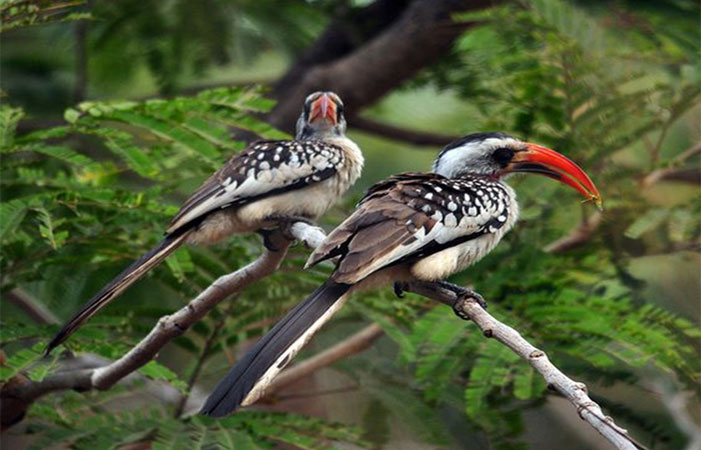
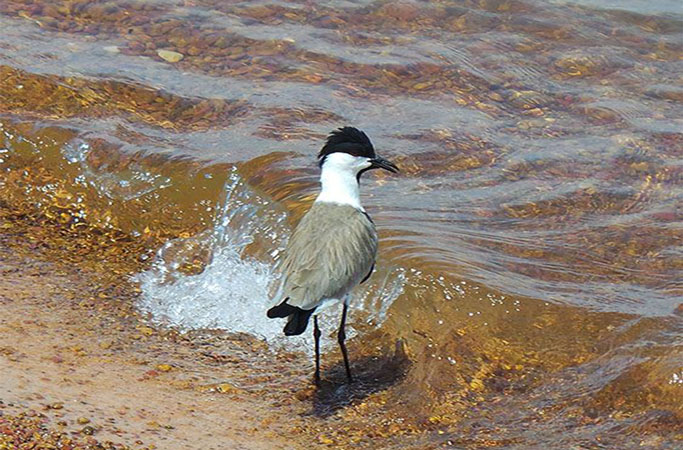
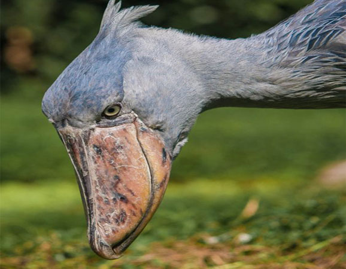

Three (3) Days Birding Safari
You will go to Lake Mburo National Park, one of the most perfect parks in Uganda for a birding safari
including wildlife. This park, the closest to Kampala is a real treasure to birders! The landscape is fabulous f
or bird watching. Bird through wetlands, lakes, savannah, rolling hills, acacia trees – all there providing the p
erfect habitat for a variety of birds. Over 313 different types of birds have been recorded in this park.

Trip Summary
DAY 1: Drive to Lake Mburo National Park
DAY 2: Birding in Lake Mburo National Park
DAY 3: Morning drive through the Park as you head out to drive back to Entebbe to end your trip

DAY 1: Drive to Lake Mburo National Park
Our driver will drive you to Lake Mburo National Park via the Equator to start your 3 Day Uganda Savannah Birdin
g Safari. You will have stops on the way as you sport several birds. As we transfer there will be numerous stop
overs looking out for certain bird species with in there hardly missed localities. The Wolly-Necked Stork, Lilac
Breasted Roller, Ruffaous Bellied Heron are among the birds of interest on this transfer. Stopping at the equat
or for photography and stretching up will be worthy while on this birding route in Uganda. You will check in at
your lodge and relax there till the next day.
Accommodation option:
Budget: Rwonyo rest camp, The Eagles nest, Rangeland Mburo lodge
Mid-range: Rwakobo rock, Acardia cottages Mburo, Mpogo safari lodge
Luxury: Muhingo lodge, Mantana tented camp, Mburo safari lodge
DAY 2: Birding in Lake Mburo National Park
After your breakfast, you will have a walk in the trails with an armed park ranger as you identify various birds
. After this we proceed for a game and birding drive which gives us higher chances of viewing mammals like the Ze
bras, Impalas, Elands, Topis, Buffaloes among others, as we do birding we focus our attention on the search for t
he Red Faced Barbet, Coqui Francolin, Brown Chested Plover, Tabora Cisticola, Lesser Blue Eared Starling, Buff B
ellied Warbler, Red Headed Weaver, Black Shouldered Cuckoo Shrike, Sulpher Breasted Bush-shrike, Green Capped Er
emomela, Bare faced Go-away-bird, Red Billed Wood Hope and more acacia associated birds, in the afternoon we go
for a boat ride in search for the African Finfoot, White Backed and Black Crowned Night Herons, Giant Kingfisher
etc back to the lodge for dinner and overnight.
DAY 3: Morning drive through the Park as you head out to drive back to Entebbe to end your trip
After breakfast you will have a drive through the park as spot other birds that you might have missed and later
drive back to Entebbe/Kampala to end your 3 Day Uganda Savannah Birding Safari. There are good spots and we look
out mostly for species that were missed where the Papyrus gonolek might be among.
End of Tour. You’ll be dropped off at the airport (or hotel)
Book Now